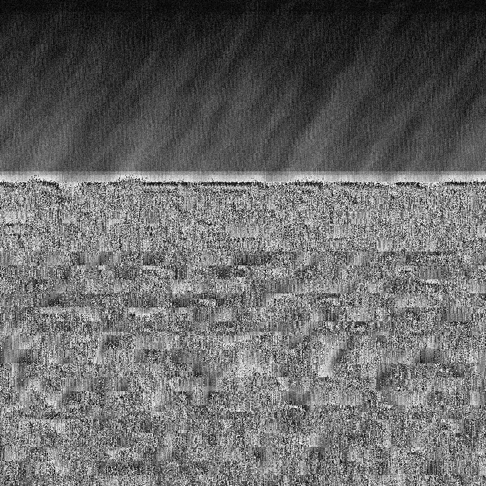

Post-Contemporary Art and the Unexpected
This project is maintained by techncr8
Access to the new premises has been granted and we are now full swing towards preparing the space and filling it with amazing art. If you have any digital art works to present or would like to put us in touch with someone you know, then please contact Ronan at ronan.whitteker@gmail.com
Our timeline is set in place. We will be opening our doors on Wednesday the 14th of June, where we will open:
Come down, bring the whanau, and experience the full visual power of the digital arts!
We will be celebrating our opening with a launch party on Friday the 30th of June at 6:00pm. There will be music from local artists and refreshments from our very special sponsors.
===Full details to be announced soon===
Please RSVP here: https://attending.io/events/zero-day-launch-party
A series of 3 digital art workshops are starting on the 8th of July, and every two weeks following (22 July and 5 August) on Saturday afternoons. We are flying some amazing artists in from around NZ and will be introducing participants to a broad spectrum of the digital arts.
The workshops are being developed to be accessible to all and will be especially interesting to those that are aware of the impact of technology on society and how we communicate those issues. We will also be covering the more speculative aspects of the art including how implementation details relate to the emerging philosophy of the Digital.
Stay tuned for a full lineup and to purchase tickets
Our premises at 165 Gloucester St is facilitated by Lfe In Vacant Spaces - LIVS. We are also proudly supported by the Christchurch City Council through the Transitional City Projects Fund and Creative New Zealand. We are Sponsored by Ergostyle for furniture.
The primary purpose of the space is to provide a focal point for the emerging digital art scene in Christchurch, New Zealand. This involves facilities for the presentation and sale of artworks and literature around Digital Art and Futurist Philosophies.
Our secondary goal is to establish an IRL community for discussion and collaborative research. This is essentially a think tank based around bringing forth a more equitable world and preparing for the singularity.
We hope to continue holding meetings for the broader arts communities here and implement our already funded workshop series in the topics of Digital Arts and Digital Humanities. After that we will work toward holding full-time courses based on the model of the School For Poetic Computation.
For more information contact our administrator at technocr8@gmail.com